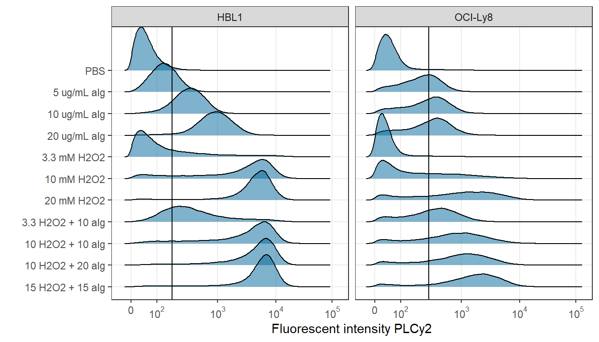
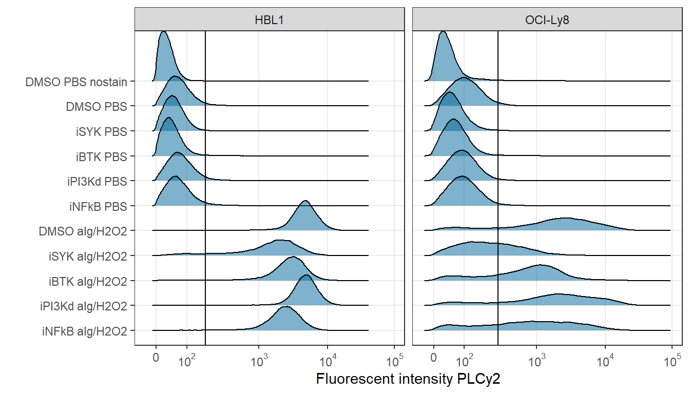
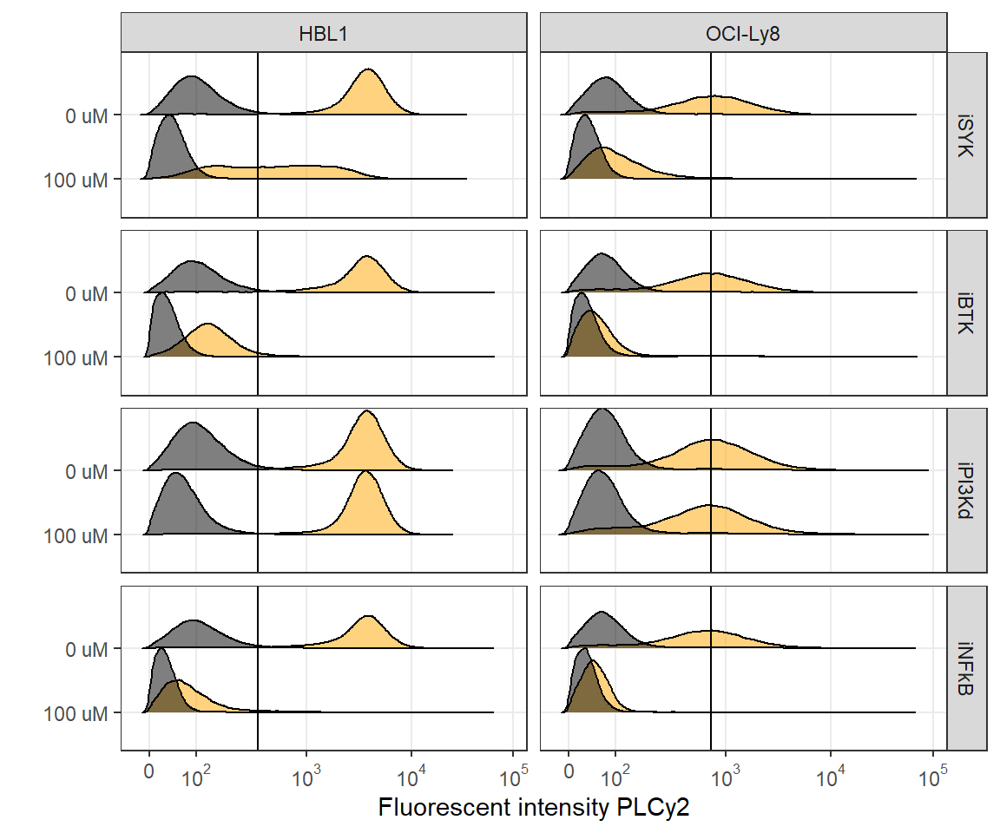

Last updated: 2025-02-12
Checks: 7 0
Knit directory: chapters_DLBCL/
This reproducible R Markdown analysis was created with workflowr (version 1.7.1). The Checks tab describes the reproducibility checks that were applied when the results were created. The Past versions tab lists the development history.
Great! Since the R Markdown file has been committed to the Git repository, you know the exact version of the code that produced these results.
Great job! The global environment was empty. Objects defined in the global environment can affect the analysis in your R Markdown file in unknown ways. For reproduciblity it’s best to always run the code in an empty environment.
The command set.seed(20241022) was run prior to running
the code in the R Markdown file. Setting a seed ensures that any results
that rely on randomness, e.g. subsampling or permutations, are
reproducible.
Great job! Recording the operating system, R version, and package versions is critical for reproducibility.
Nice! There were no cached chunks for this analysis, so you can be confident that you successfully produced the results during this run.
Great job! Using relative paths to the files within your workflowr project makes it easier to run your code on other machines.
Great! You are using Git for version control. Tracking code development and connecting the code version to the results is critical for reproducibility.
The results in this page were generated with repository version 1ffbd94. See the Past versions tab to see a history of the changes made to the R Markdown and HTML files.
Note that you need to be careful to ensure that all relevant files for
the analysis have been committed to Git prior to generating the results
(you can use wflow_publish or
wflow_git_commit). workflowr only checks the R Markdown
file, but you know if there are other scripts or data files that it
depends on. Below is the status of the Git repository when the results
were generated:
Ignored files:
Ignored: .Rhistory
Ignored: .Rproj.user/
Ignored: analysis/figure/
Untracked files:
Untracked: code/packages_FACS.R
Untracked: code/packages_seq.R
Untracked: data/AL006_InhibCombiTest/
Untracked: data/DS102_StimTest/
Untracked: data/DS103_ViabilityTest/
Untracked: data/DS104_StimInhibTest/
Untracked: data/DS108_StimInhibIDseq/
Untracked: data/DS113_InhibCombiIDseq/
Untracked: output/DS102_StimTest/
Untracked: output/DS103_ViabilityTest/
Untracked: output/DS104_StimInhibTest/
Untracked: output/DS108_StimInhibIDseq/
Untracked: output/DS113_InhibCombiIDseq/
Untracked: output/figures/
Untracked: output/network_visual_DLBCL/
Untracked: output/network_visual_paper/
Unstaged changes:
Deleted: analysis/about.Rmd
Note that any generated files, e.g. HTML, png, CSS, etc., are not included in this status report because it is ok for generated content to have uncommitted changes.
These are the previous versions of the repository in which changes were
made to the R Markdown (analysis/b_flow_ann.Rmd) and HTML
(docs/b_flow_ann.html) files. If you’ve configured a remote
Git repository (see ?wflow_git_remote), click on the
hyperlinks in the table below to view the files as they were in that
past version.
| File | Version | Author | Date | Message |
|---|---|---|---|---|
| html | 4492de7 | mwitmond | 2024-10-22 | Build site. |
| Rmd | 6559698 | mwitmond | 2024-10-22 | Paper figs + analysis files for ch figs |
knitr::opts_chunk$set(
message = F, warning = F, echo = T, eval = T
)
# Load required packages
source("code/packages_FACS.R", local = knitr::knit_global())Load the gated dataset and create a dataset with live single cells
# HBL1 data
gs_HBL1 <- load_gs(paste0("output/DS102_StimTest/", "flow_gated_HBL1"))
gated_pops_HBL1 <- gs_get_pop_paths(gs_HBL1, path = "auto")
cs_HBL1 <- gs_pop_get_data(gs_HBL1, tail(gated_pops_HBL1, 1))
df_HBL1 <- fortify(cs_HBL1)
df_HBL1[df_HBL1 <= 0] <- NA # Remove all zero values from df in order to perform log transformations
# OCI-Ly8 data
gs_Ly8 <- load_gs(paste0("output/DS102_StimTest/", "flow_gated_Ly8"))
gated_pops_Ly8 <- gs_get_pop_paths(gs_Ly8, path = "auto")
cs_Ly8 <- gs_pop_get_data(gs_Ly8, tail(gated_pops_Ly8, 1))
df_Ly8 <- fortify(cs_Ly8)
df_Ly8[df_Ly8 <= 0] <- NA # Remove all zero values from df in order to perform log transformations
# Combine all cell line datasets
df_DS102 <- list(df_HBL1, df_Ly8) %>% reduce(full_join)
# Select only columns that are needed
df_DS102 <- df_DS102[ , c("name", "plateID", "rowID", "colID", "wellID", "FSC.A", "SSC.A", "BV421.A", "PE.A", "Alexa.647.A", "Alexa.488.A")]
gc() used (Mb) gc trigger (Mb) max used (Mb)
Ncells 3532497 188.7 7072688 377.8 4096667 218.8
Vcells 27456321 209.5 51978272 396.6 51738757 394.8# Add metadata per well from custom .csv file
metadata_DS102 <- read_csv("data/DS102_StimTest/flow/metadata_plate_DS102.csv")
# Change columns into character if necessary
metadata_DS102$colID <- as.character(metadata_DS102$colID)
df_DS102 <- left_join(df_DS102, metadata_DS102)
# Remove samples with <5000 cells (except if the sample is t = 0 min)
counts_DS102 <- df_DS102 %>% count(plateID, wellID, name = "sample_cell_count")
df_DS102 <- left_join(df_DS102, counts_DS102)
df_DS102 <- df_DS102[df_DS102$sample_cell_count > 5000, ]
gc() used (Mb) gc trigger (Mb) max used (Mb)
Ncells 3607413 192.7 7072688 377.8 4675683 249.8
Vcells 36104328 275.5 75024711 572.4 62364438 475.9# kable(df_DS102 %>% head(5)) %>% kable_styling(bootstrap_options = c("striped", "hover"))Pivot the full dataset into a tidy dataset
# Combine all data into one tidy dataframe (all data in one column instead of one column for each fluor)
cols_meta_DS102 <- c("plateID", "wellID", "sample", "cell_line", "stimulus", "conc", "conc_text", "description", "staining", "sample_cell_count") # include all metadata columns
df_PE_DS102 <- df_DS102 %>%
select(all_of(cols_meta_DS102), protein_PE, PE.A, FSC.A, SSC.A) %>%
mutate(fluor = "PE") %>%
rename(
protein = protein_PE,
fluorescence = PE.A,
FSC = FSC.A,
SSC = SSC.A)
df_AF647_DS102 <- df_DS102 %>%
select(all_of(cols_meta_DS102), protein_AF647, Alexa.647.A, FSC.A, SSC.A) %>%
mutate(fluor = "AF647") %>%
rename(
protein = protein_AF647,
fluorescence = Alexa.647.A,
FSC = FSC.A,
SSC = SSC.A)
df_AF488_DS102 <- df_DS102 %>%
select(all_of(cols_meta_DS102), protein_AF488, Alexa.488.A, FSC.A, SSC.A) %>%
mutate(fluor = "AF488") %>%
rename(
protein = protein_AF488,
fluorescence = Alexa.488.A,
FSC = FSC.A,
SSC = SSC.A)
df_BV421_DS102 <- df_DS102 %>%
select(all_of(cols_meta_DS102), protein_BV421, BV421.A, FSC.A, SSC.A) %>%
mutate(fluor = "BV421") %>%
rename(
protein = protein_BV421,
fluorescence = BV421.A,
FSC = FSC.A,
SSC = SSC.A)
df_tidy_DS102 <- list(df_PE_DS102, df_AF647_DS102, df_AF488_DS102, df_BV421_DS102) %>% reduce(full_join)
gc() used (Mb) gc trigger (Mb) max used (Mb)
Ncells 3619720 193.4 7072688 377.8 4675683 249.8
Vcells 81979224 625.5 200729165 1531.5 172494330 1316.1# kable(df_tidy_DS102 %>% head(5)) %>% kable_styling(bootstrap_options = c("striped", "hover"))data_info_DS102 <- df_tidy_DS102 %>%
filter(conc == "0") %>%
group_by(plateID, cell_line, protein) %>%
summarise(zero_quant97.5 = quantile(fluorescence, c(0.975), na.rm = T))
df_tidy_DS102 <- left_join(df_tidy_DS102, data_info_DS102)
# Create dataframe with percentage ON for each condition
data_total_DS102 <- df_tidy_DS102 %>%
group_by(plateID, wellID, protein) %>%
count(name = "count_total")
data_on_DS102 <- df_tidy_DS102 %>%
filter((fluorescence - zero_quant97.5) > 0) %>%
group_by(plateID, wellID, protein) %>%
count(name = "count_on")
data_counts_DS102 <- left_join(data_total_DS102, data_on_DS102) %>%
mutate(percent_on = (count_on / count_total) * 100)
df_tidy_DS102 <- left_join(df_tidy_DS102, data_counts_DS102)
gc() used (Mb) gc trigger (Mb) max used (Mb)
Ncells 3625422 193.7 7072688 377.8 4675683 249.8
Vcells 90864649 693.3 202090967 1541.9 202090967 1541.9kable(df_tidy_DS102 %>% head(5)) %>% kable_styling(bootstrap_options = c("striped", "hover"))| plateID | wellID | sample | cell_line | stimulus | conc | conc_text | description | staining | sample_cell_count | protein | fluorescence | FSC | SSC | fluor | zero_quant97.5 | count_total | count_on | percent_on |
|---|---|---|---|---|---|---|---|---|---|---|---|---|---|---|---|---|---|---|
| A | B01 | 1 | HBL1 | PBS | 0 | PBS | HBL1 - PBS | no | 38753 | No stain | 224.3422 | 64193.40 | 31489.72 | PE | 599.6643 | 155012 | 3542 | 2.284984 |
| A | B01 | 1 | HBL1 | PBS | 0 | PBS | HBL1 - PBS | no | 38753 | No stain | 81.8090 | 62658.76 | 27165.65 | PE | 599.6643 | 155012 | 3542 | 2.284984 |
| A | B01 | 1 | HBL1 | PBS | 0 | PBS | HBL1 - PBS | no | 38753 | No stain | 124.8220 | 78798.67 | 27711.32 | PE | 599.6643 | 155012 | 3542 | 2.284984 |
| A | B01 | 1 | HBL1 | PBS | 0 | PBS | HBL1 - PBS | no | 38753 | No stain | 183.0160 | 56249.39 | 30347.76 | PE | 599.6643 | 155012 | 3542 | 2.284984 |
| A | B01 | 1 | HBL1 | PBS | 0 | PBS | HBL1 - PBS | no | 38753 | No stain | 334.8265 | 118719.87 | 60030.94 | PE | 599.6643 | 155012 | 3542 | 2.284984 |
cells_DS102 <- c("HBL1", "BJAB", "OCI-Ly8")
conc_DS102 <- c("PBS",
"5 ug/mL aIg", "10 ug/mL aIg", "20 ug/mL aIg",
"3.3 mM H2O2", "10 mM H2O2", "20 mM H2O2",
"3.3 H2O2 + 10 aIg", "10 H2O2 + 10 aIg", "10 H2O2 + 20 aIg", "15 H2O2 + 15 aIg")
ggplot(subset(df_tidy_DS102, protein == "pPLCy2 (Y759)"), aes(x = fluorescence)) +
geom_density_ridges(
aes(y = factor(conc_text, levels = rev(conc_DS102))),
scale = 2,
fill = "#006699",
alpha = 0.5
) +
geom_vline(aes(xintercept = zero_quant97.5), linewidth = 0.5) +
facet_wrap(vars(factor(cell_line, levels = cells_DS102))) +
scale_x_logicle() + # logicle scale instead of log10 scale
labs(x = paste("Fluorescent intensity PLCy2"), y = "") +
theme_bw() +
theme(legend.position = "none", panel.grid.minor = element_blank())
| Version | Author | Date |
|---|---|---|
| 4492de7 | mwitmond | 2024-10-22 |
Calculate median fluorescent values for each sample/replicate
# Calculate median values for each sample
medians_DS102 <- df_tidy_DS102 %>%
group_by(plateID, wellID, protein, fluor) %>%
summarise_at(vars(fluorescence), list(fluorescence_median = median), na.rm = TRUE)
medians_tidy_DS102 <- left_join(medians_DS102, distinct(select(df_tidy_DS102, cols_meta_DS102))) %>%
left_join(data_counts_DS102)
# Calculate fold change compared to conc 0 (average of 0 ug/mL aIg + 0 mM H2O2)
median_zero_DS102 <- medians_tidy_DS102 %>%
filter(conc == "0") %>%
group_by(plateID, cell_line, protein) %>%
summarise(zero_median = mean(fluorescence_median))
medians_tidy_DS102 <- left_join(medians_tidy_DS102, median_zero_DS102) %>%
mutate(FC = (fluorescence_median / zero_median),
log2FC = log2(FC))
gc() used (Mb) gc trigger (Mb) max used (Mb)
Ncells 3814694 203.8 7072688 377.8 7072688 377.8
Vcells 103123714 786.8 202090967 1541.9 202090967 1541.9# kable(medians_tidy_DS102 %>% head(5)) %>% kable_styling(bootstrap_options = c("striped", "hover"))Save annotated datasets as .csv file
write.csv(df_tidy_DS102, file = "output/DS102_StimTest/flow_ann/flow_data_DS102.csv", row.names = F)
write.csv(medians_tidy_DS102, file = "output/DS102_StimTest/flow_ann/flow_medians_DS102.csv", row.names = F)# Remove unnecessary files to clear up memory
rm(list = ls(pattern = "_DS102"))
rm(list = ls(pattern = "_HBL1"))
rm(list = ls(pattern = "_Ly8"))
gc() used (Mb) gc trigger (Mb) max used (Mb)
Ncells 3815051 203.8 7072688 377.8 7072688 377.8
Vcells 18470033 141.0 161672774 1233.5 202090967 1541.9Load the gated dataset and create a dataset with live single cells
# HBL1 data
gs_HBL1 <- load_gs(paste0("output/DS104_StimInhibTest/", "flow_gated_HBL1"))
gated_pops_HBL1 <- gs_get_pop_paths(gs_HBL1, path = "auto")
cs_HBL1 <- gs_pop_get_data(gs_HBL1, tail(gated_pops_HBL1, 1))
df_HBL1 <- fortify(cs_HBL1)
df_HBL1[df_HBL1 <= 0] <- NA # Remove all zero values from df in order to perform log transformations
# OCI-Ly8 data
gs_Ly8 <- load_gs(paste0("output/DS104_StimInhibTest/", "flow_gated_Ly8"))
gated_pops_Ly8 <- gs_get_pop_paths(gs_Ly8, path = "auto")
cs_Ly8 <- gs_pop_get_data(gs_Ly8, tail(gated_pops_Ly8, 1))
df_Ly8 <- fortify(cs_Ly8)
df_Ly8[df_Ly8 <= 0] <- NA # Remove all zero values from df in order to perform log transformations
# Combine all cell line datasets
df_DS104 <- list(df_HBL1, df_Ly8) %>% reduce(full_join)
# Select only columns that are needed
df_DS104 <- df_DS104[ , c("name", "plateID", "rowID", "colID", "wellID", "FSC.A", "SSC.A", "BV421.A", "PE.A", "Alexa.647.A", "Alexa.488.A")]
gc() used (Mb) gc trigger (Mb) max used (Mb)
Ncells 3816239 203.9 7072688 377.8 7072688 377.8
Vcells 35178506 268.4 129338220 986.8 202090967 1541.9# Add metadata per well from custom .csv file
metadata_DS104 <- read_csv("data/DS104_StimInhibTest/flow/metadata_plate_DS104.csv")
# Change columns into character if necessary
metadata_DS104$colID <- as.character(metadata_DS104$colID)
df_DS104 <- left_join(df_DS104, metadata_DS104)
# Remove samples with <5000 cells (except if the sample is t = 0 min)
counts_DS104 <- df_DS104 %>% count(plateID, wellID, name = "sample_cell_count")
df_DS104 <- left_join(df_DS104, counts_DS104)
df_DS104 <- df_DS104[df_DS104$sample_cell_count > 5000, ]
gc() used (Mb) gc trigger (Mb) max used (Mb)
Ncells 3815618 203.8 7072688 377.8 7072688 377.8
Vcells 43707440 333.5 129338220 986.8 202090967 1541.9# kable(df_DS104 %>% head(5)) %>% kable_styling(bootstrap_options = c("striped", "hover"))Pivot the full dataset into a tidy dataset
# Combine all data into one tidy dataframe (all data in one column instead of one column for each fluor)
cols_meta_DS104 <- c("plateID", "wellID", "sample", "cell_line", "stimulus", "inhibitor", "description", "descript_cell_inhib", "descript_cell_stim", "descript_inhib_stim", "descript_inhib_stim_no", "staining", "nostain") # include all metadata columns
df_PE_DS104 <- df_DS104 %>%
select(all_of(cols_meta_DS104), protein_PE, PE.A, FSC.A, SSC.A) %>%
mutate(fluor = "PE") %>%
rename(
protein = protein_PE,
fluorescence = PE.A,
FSC = FSC.A,
SSC = SSC.A)
df_AF647_DS104 <- df_DS104 %>%
select(all_of(cols_meta_DS104), protein_AF647, Alexa.647.A, FSC.A, SSC.A) %>%
mutate(fluor = "AF647") %>%
rename(
protein = protein_AF647,
fluorescence = Alexa.647.A,
FSC = FSC.A,
SSC = SSC.A)
df_AF488_DS104 <- df_DS104 %>%
select(all_of(cols_meta_DS104), protein_AF488, Alexa.488.A, FSC.A, SSC.A) %>%
mutate(fluor = "AF488") %>%
rename(
protein = protein_AF488,
fluorescence = Alexa.488.A,
FSC = FSC.A,
SSC = SSC.A)
df_BV421_DS104 <- df_DS104 %>%
select(all_of(cols_meta_DS104), protein_BV421, BV421.A, FSC.A, SSC.A) %>%
mutate(fluor = "BV421") %>%
rename(
protein = protein_BV421,
fluorescence = BV421.A,
FSC = FSC.A,
SSC = SSC.A)
df_tidy_DS104 <- list(df_PE_DS104, df_AF647_DS104, df_AF488_DS104, df_BV421_DS104) %>% reduce(full_join)
gc() used (Mb) gc trigger (Mb) max used (Mb)
Ncells 3815792 203.8 7072688 377.8 7072688 377.8
Vcells 86834354 662.5 223787643 1707.4 202090967 1541.9# kable(df_tidy_DS104 %>% head(5)) %>% kable_styling(bootstrap_options = c("striped", "hover"))data_info_DS104 <- df_tidy_DS104 %>%
filter(stimulus == "PBS" & inhibitor == "DMSO") %>%
group_by(plateID, cell_line, protein) %>%
summarise(zero_quant97.5 = quantile(fluorescence, c(0.975), na.rm = T))
df_tidy_DS104 <- left_join(df_tidy_DS104, data_info_DS104)
# Create dataframe with percentage ON for each condition
data_total_DS104 <- df_tidy_DS104 %>%
group_by(plateID, wellID, protein) %>%
count(name = "count_total")
data_on_DS104 <- df_tidy_DS104 %>%
filter((fluorescence - zero_quant97.5) > 0) %>%
group_by(plateID, wellID, protein) %>%
count(name = "count_on")
data_counts_DS104 <- left_join(data_total_DS104, data_on_DS104) %>%
mutate(percent_on = (count_on / count_total) * 100)
df_tidy_DS104 <- left_join(df_tidy_DS104, data_counts_DS104)
gc() used (Mb) gc trigger (Mb) max used (Mb)
Ncells 3816221 203.9 7072688 377.8 7072688 377.8
Vcells 93644363 714.5 223787643 1707.4 221701298 1691.5kable(df_tidy_DS104 %>% head(5)) %>% kable_styling(bootstrap_options = c("striped", "hover"))| plateID | wellID | sample | cell_line | stimulus | inhibitor | description | descript_cell_inhib | descript_cell_stim | descript_inhib_stim | descript_inhib_stim_no | staining | nostain | protein | fluorescence | FSC | SSC | fluor | zero_quant97.5 | count_total | count_on | percent_on |
|---|---|---|---|---|---|---|---|---|---|---|---|---|---|---|---|---|---|---|---|---|---|
| A | B01 | 1 | HBL1 | PBS | DMSO | HBL1 - DMSO PBS | HBL1 - DMSO | HBL1 - PBS | DMSO PBS | DMSO PBS | yes | NA | pSYK (Y525/Y526) | 1188.1938 | 112119.49 | 41779.88 | PE | 1686.168 | 41565 | 1457 | 3.505353 |
| A | B01 | 1 | HBL1 | PBS | DMSO | HBL1 - DMSO PBS | HBL1 - DMSO | HBL1 - PBS | DMSO PBS | DMSO PBS | yes | NA | pSYK (Y525/Y526) | 1082.3319 | 86489.45 | 63320.65 | PE | 1686.168 | 41565 | 1457 | 3.505353 |
| A | B01 | 1 | HBL1 | PBS | DMSO | HBL1 - DMSO PBS | HBL1 - DMSO | HBL1 - PBS | DMSO PBS | DMSO PBS | yes | NA | pSYK (Y525/Y526) | 742.7270 | 69594.13 | 27860.31 | PE | 1686.168 | 41565 | 1457 | 3.505353 |
| A | B01 | 1 | HBL1 | PBS | DMSO | HBL1 - DMSO PBS | HBL1 - DMSO | HBL1 - PBS | DMSO PBS | DMSO PBS | yes | NA | pSYK (Y525/Y526) | 1725.9722 | 87380.09 | 33685.25 | PE | 1686.168 | 41565 | 1457 | 3.505353 |
| A | B01 | 1 | HBL1 | PBS | DMSO | HBL1 - DMSO PBS | HBL1 - DMSO | HBL1 - PBS | DMSO PBS | DMSO PBS | yes | NA | pSYK (Y525/Y526) | 835.0386 | 78656.66 | 33968.96 | PE | 1686.168 | 41565 | 1457 | 3.505353 |
treat_DS104 <- c("DMSO PBS nostain", "DMSO PBS", "iSYK PBS", "iBTK PBS", "iPI3Kd PBS", "iNFkB PBS",
"DMSO aIg/H2O2", "iSYK aIg/H2O2", "iBTK aIg/H2O2", "iPI3Kd aIg/H2O2", "iNFkB aIg/H2O2")
ggplot(subset(df_tidy_DS104, protein == "pPLCy2 (Y759)"), aes(x = fluorescence)) +
geom_density_ridges(
aes(y = factor(descript_inhib_stim_no, levels = rev(treat_DS104))),
scale = 2,
fill = "#006699",
alpha = 0.5
) +
geom_vline(aes(xintercept = zero_quant97.5), linewidth = 0.5) +
facet_wrap(vars(factor(cell_line))) +
scale_x_logicle() + # logicle scale instead of log10 scale
labs(x = paste("Fluorescent intensity PLCy2"), y = "") +
theme_bw() +
theme(legend.position = "none", panel.grid.minor = element_blank())
| Version | Author | Date |
|---|---|---|
| 4492de7 | mwitmond | 2024-10-22 |
Calculate median fluorescent values for each sample/replicate
# Calculate median values for each sample
medians_DS104 <- df_tidy_DS104 %>%
group_by(plateID, wellID, protein, fluor) %>%
summarise_at(vars(fluorescence), list(fluorescence_median = median), na.rm = TRUE)
medians_tidy_DS104 <- left_join(medians_DS104, distinct(select(df_tidy_DS104, cols_meta_DS104))) %>%
left_join(data_counts_DS104)
# Calculate fold change compared to DMSO PBS
median_zero_DS104 <- medians_tidy_DS104 %>%
filter(stimulus == "PBS" & inhibitor == "DMSO") %>%
group_by(plateID, cell_line, protein) %>%
summarise(zero_median = mean(fluorescence_median))
medians_tidy_DS104 <- left_join(medians_tidy_DS104, median_zero_DS104) %>%
mutate(FC_median = (fluorescence_median / zero_median),
log2FC_median = log2(FC_median))
gc() used (Mb) gc trigger (Mb) max used (Mb)
Ncells 3816513 203.9 7072688 377.8 7072688 377.8
Vcells 93682061 714.8 223787643 1707.4 223768963 1707.3# kable(medians_tidy_DS104 %>% head(5)) %>% kable_styling(bootstrap_options = c("striped", "hover"))# Calculate median values for each sample
sums_DS104 <- df_tidy_DS104 %>%
group_by(plateID, wellID, protein, fluor) %>%
summarise_at(vars(fluorescence), list(fluorescence_sum = sum), na.rm = TRUE)
medians_tidy_DS104 <- medians_tidy_DS104 %>%
left_join(sums_DS104)
# Calculate fold change compared to DMSO PBS
sums_zero_DS104 <- medians_tidy_DS104 %>%
filter(stimulus == "PBS" & inhibitor == "DMSO") %>%
group_by(plateID, cell_line, protein) %>%
summarise(zero_sum = mean(fluorescence_sum))
medians_tidy_DS104 <- left_join(medians_tidy_DS104, sums_zero_DS104) %>%
mutate(FC_sum = (fluorescence_sum / zero_sum),
log2FC_sum = log2(FC_sum))
gc() used (Mb) gc trigger (Mb) max used (Mb)
Ncells 3816648 203.9 7072688 377.8 7072688 377.8
Vcells 93679190 714.8 223787643 1707.4 223768963 1707.3# kable(medians_tidy_DS104 %>% head(5)) %>% kable_styling(bootstrap_options = c("striped", "hover"))Save annotated datasets as .csv file
write.csv(df_tidy_DS104, file = "output/DS104_StimInhibTest/flow_ann/flow_data_DS104.csv", row.names = F)
write.csv(medians_tidy_DS104, file = "output/DS104_StimInhibTest/flow_ann/flow_medians_DS104.csv", row.names = F)# Remove unnecessary files to clear up memory
rm(list = ls(pattern = "_DS104"))
rm(list = ls(pattern = "_HBL1"))
rm(list = ls(pattern = "_Ly8"))
gc() used (Mb) gc trigger (Mb) max used (Mb)
Ncells 3815344 203.8 7072688 377.8 7072688 377.8
Vcells 18501964 141.2 179030115 1365.9 223768963 1707.3Load the gated dataset and create a dataset with live single cells
gs_DS108 <- load_gs(paste0("output/DS108_StimInhibIDseq/", "flow_gated"))
gated_pops_DS108 <- gs_get_pop_paths(gs_DS108, path = "auto")
cs_DS108 <- gs_pop_get_data(gs_DS108, tail(gated_pops_DS108, 1))
df_DS108 <- fortify(cs_DS108)
df_DS108[df_DS108 <= 0] <- NA # Remove all zero values from df in order to perform log transformations
# Select only columns that are needed
df_DS108 <- df_DS108[ , c("name", "plateID", "rowID", "colID", "wellID", "FSC.A", "SSC.A", "BV421.A", "PE.A", "Alexa.647.A", "Alexa.488.A")]
gc() used (Mb) gc trigger (Mb) max used (Mb)
Ncells 3816486 203.9 7072688 377.8 7072688 377.8
Vcells 30075602 229.5 143224092 1092.8 223768963 1707.3# Add metadata per well from custom .csv file
metadata_DS108 <- read_csv("data/DS108_StimInhibIDseq/flow/metadata_plate_DS108.csv")
# Change columns into character if necessary
metadata_DS108$colID <- as.character(metadata_DS108$colID)
df_DS108 <- left_join(df_DS108, metadata_DS108)
# Remove samples with <5000 cells (except if the sample is t = 0 min)
counts_DS108 <- df_DS108 %>% count(plateID, wellID, name = "sample_cell_count")
df_DS108 <- left_join(df_DS108, counts_DS108)
df_DS108 <- df_DS108[df_DS108$sample_cell_count > 5000, ]
gc() used (Mb) gc trigger (Mb) max used (Mb)
Ncells 3815725 203.8 7072688 377.8 7072688 377.8
Vcells 43512414 332.0 143224092 1092.8 223768963 1707.3# kable(df_DS108 %>% head(5)) %>% kable_styling(bootstrap_options = c("striped", "hover"))Pivot the full dataset into a tidy dataset
# Combine all data into one tidy dataframe (all data in one column instead of one column for each fluor)
cols_meta_DS108 <- c("plateID", "wellID", "sample", "cell_line", "stimulus", "inhibitor", "inhib_conc_uM", "inhib_conc", "inhib_conc_text", "description", "staining") # include all metadata columns
df_PE_DS108 <- df_DS108 %>%
select(all_of(cols_meta_DS108), protein_PE, PE.A, FSC.A, SSC.A) %>%
mutate(fluor = "PE") %>%
rename(
protein = protein_PE,
fluorescence = PE.A,
FSC = FSC.A,
SSC = SSC.A)
df_AF647_DS108 <- df_DS108 %>%
select(all_of(cols_meta_DS108), protein_AF647, Alexa.647.A, FSC.A, SSC.A) %>%
mutate(fluor = "AF647") %>%
rename(
protein = protein_AF647,
fluorescence = Alexa.647.A,
FSC = FSC.A,
SSC = SSC.A)
df_AF488_DS108 <- df_DS108 %>%
select(all_of(cols_meta_DS108), protein_AF488, Alexa.488.A, FSC.A, SSC.A) %>%
mutate(fluor = "AF488") %>%
rename(
protein = protein_AF488,
fluorescence = Alexa.488.A,
FSC = FSC.A,
SSC = SSC.A)
df_BV421_DS108 <- df_DS108 %>%
select(all_of(cols_meta_DS108), protein_BV421, BV421.A, FSC.A, SSC.A) %>%
mutate(fluor = "BV421") %>%
rename(
protein = protein_BV421,
fluorescence = BV421.A,
FSC = FSC.A,
SSC = SSC.A)
df_tidy_DS108 <- list(df_PE_DS108, df_AF647_DS108, df_AF488_DS108, df_BV421_DS108) %>% reduce(full_join)
gc() used (Mb) gc trigger (Mb) max used (Mb)
Ncells 3815896 203.8 7072688 377.8 7072688 377.8
Vcells 112975639 862.0 251649550 1920.0 248828968 1898.5# kable(df_tidy_DS108 %>% head(5)) %>% kable_styling(bootstrap_options = c("striped", "hover"))data_info_DS108 <- df_tidy_DS108 %>%
filter(stimulus == "PBS" & inhib_conc == "0 uM") %>%
group_by(plateID, cell_line, protein) %>%
summarise(zero_quant97.5 = quantile(fluorescence, c(0.975), na.rm = T))
df_tidy_DS108 <- left_join(df_tidy_DS108, data_info_DS108)
# Create dataframe with percentage ON for each condition
data_total_DS108 <- df_tidy_DS108 %>%
group_by(plateID, wellID, protein) %>%
count(name = "count_total")
data_on_DS108 <- df_tidy_DS108 %>%
filter((fluorescence - zero_quant97.5) > 0) %>%
group_by(plateID, wellID, protein) %>%
count(name = "count_on")
data_counts_DS108 <- left_join(data_total_DS108, data_on_DS108) %>%
mutate(percent_on = (count_on / count_total) * 100)
df_tidy_DS108 <- left_join(df_tidy_DS108, data_counts_DS108)
gc() used (Mb) gc trigger (Mb) max used (Mb)
Ncells 3816448 203.9 7072688 377.8 7072688 377.8
Vcells 125235306 955.5 302059460 2304.6 251119384 1915.9kable(df_tidy_DS108 %>% head(5)) %>% kable_styling(bootstrap_options = c("striped", "hover"))| plateID | wellID | sample | cell_line | stimulus | inhibitor | inhib_conc_uM | inhib_conc | inhib_conc_text | description | staining | protein | fluorescence | FSC | SSC | fluor | zero_quant97.5 | count_total | count_on | percent_on |
|---|---|---|---|---|---|---|---|---|---|---|---|---|---|---|---|---|---|---|---|
| A | A01 | 1 | HBL1 | PBS | iSYK | 0 | 0 uM | 0 uM iSYK | HBL1 0 uM iSYK PBS | yes | pSYK (Y525/Y526) | 2122.8513 | 94149.51 | 47077.25 | PE | 2048.109 | 41031 | 1129 | 2.751578 |
| A | A01 | 1 | HBL1 | PBS | iSYK | 0 | 0 uM | 0 uM iSYK | HBL1 0 uM iSYK PBS | yes | pSYK (Y525/Y526) | 1600.4658 | 108410.05 | 56301.46 | PE | 2048.109 | 41031 | 1129 | 2.751578 |
| A | A01 | 1 | HBL1 | PBS | iSYK | 0 | 0 uM | 0 uM iSYK | HBL1 0 uM iSYK PBS | yes | pSYK (Y525/Y526) | 802.6702 | 95271.29 | 58451.93 | PE | 2048.109 | 41031 | 1129 | 2.751578 |
| A | A01 | 1 | HBL1 | PBS | iSYK | 0 | 0 uM | 0 uM iSYK | HBL1 0 uM iSYK PBS | yes | pSYK (Y525/Y526) | 561.3817 | 71080.16 | 21077.40 | PE | 2048.109 | 41031 | 1129 | 2.751578 |
| A | A01 | 1 | HBL1 | PBS | iSYK | 0 | 0 uM | 0 uM iSYK | HBL1 0 uM iSYK PBS | yes | pSYK (Y525/Y526) | 536.1967 | 66185.18 | 22388.65 | PE | 2048.109 | 41031 | 1129 | 2.751578 |
ggplot(subset(df_tidy_DS108, protein == "pPLCy2 (Y759)"), aes(x = fluorescence)) +
geom_density_ridges(
aes(y = factor(inhib_conc, levels = c("100 uM", "0 uM")), fill = stimulus),
scale = 1,
alpha = 0.5
) +
geom_vline(aes(xintercept = zero_quant97.5), linewidth = 0.5) +
facet_grid(vars(factor(inhibitor, levels = c("iSYK", "iBTK", "iPI3Kd", "iNFkB"))), vars(factor(cell_line))) +
scale_fill_manual(values = c(PBS = "black", "aIg+H2O2" = "orange"), name = "") +
scale_x_logicle() + # logicle scale instead of log10 scale
labs(x = paste("Fluorescent intensity PLCy2"), y = "") +
theme_bw() +
theme(legend.position = "none", panel.grid.minor = element_blank())
| Version | Author | Date |
|---|---|---|
| 4492de7 | mwitmond | 2024-10-22 |
Calculate median fluorescent values for each sample/replicate
# Calculate median values for each sample
medians_DS108 <- df_tidy_DS108 %>%
group_by(plateID, wellID, protein, fluor) %>%
summarise_at(vars(fluorescence), list(fluorescence_median = median), na.rm = TRUE)
medians_tidy_DS108 <- left_join(medians_DS108, distinct(select(df_tidy_DS108, cols_meta_DS108))) %>%
left_join(data_counts_DS108)
# Calculate fold change compared to DMSO PBS
median_zero_DS108 <- medians_tidy_DS108 %>%
filter(stimulus == "PBS" & inhib_conc == "0 uM") %>%
group_by(plateID, cell_line, protein) %>%
summarise(zero_median = mean(fluorescence_median))
medians_tidy_DS108 <- left_join(medians_tidy_DS108, median_zero_DS108) %>%
mutate(FC_median = (fluorescence_median / zero_median),
log2FC_median = log2(FC_median))
gc() used (Mb) gc trigger (Mb) max used (Mb)
Ncells 3838024 205.0 7072688 377.8 7072688 377.8
Vcells 132758328 1012.9 302059460 2304.6 301932920 2303.6# kable(medians_tidy_DS108 %>% head(5)) %>% kable_styling(bootstrap_options = c("striped", "hover"))Save annotated datasets as .csv file
write.csv(df_tidy_DS108, file = "output/DS108_StimInhibIDseq/flow_ann/flow_data_DS108.csv", row.names = F)
write.csv(medians_tidy_DS108, file = "output/DS108_StimInhibIDseq/flow_ann/flow_medians_DS108.csv", row.names = F)# Remove unnecessary files to clear up memory
rm(list = ls(pattern = "_DS108"))
gc() used (Mb) gc trigger (Mb) max used (Mb)
Ncells 3836685 205.0 7072688 377.8 7072688 377.8
Vcells 26012958 198.5 241647568 1843.7 301932920 2303.6
sessionInfo()R version 4.4.1 (2024-06-14 ucrt)
Platform: x86_64-w64-mingw32/x64
Running under: Windows 10 x64 (build 19045)
Matrix products: default
locale:
[1] LC_COLLATE=English_Netherlands.utf8 LC_CTYPE=English_Netherlands.utf8
[3] LC_MONETARY=English_Netherlands.utf8 LC_NUMERIC=C
[5] LC_TIME=English_Netherlands.utf8
time zone: Europe/Amsterdam
tzcode source: internal
attached base packages:
[1] stats graphics grDevices utils datasets methods base
other attached packages:
[1] png_0.1-8 patchwork_1.2.0 geomtextpath_0.1.4
[4] ggh4x_0.2.8 magick_2.8.3 greekLetters_1.0.2
[7] kableExtra_1.4.0 ggrepel_0.9.5 scales_1.3.0
[10] ggpubr_0.6.0 cowplot_1.1.3 ggthemes_5.1.0
[13] RColorBrewer_1.1-3 viridis_0.6.5 viridisLite_0.4.2
[16] ggridges_0.5.6 platetools_0.1.7 forecast_8.23.0
[19] readxl_1.4.3 zoo_1.8-12 lubridate_1.9.3
[22] forcats_1.0.0 stringr_1.5.1 dplyr_1.1.4
[25] purrr_1.0.2 readr_2.1.5 tidyr_1.3.1
[28] tibble_3.2.1 tidyverse_2.0.0 ggcyto_1.32.0
[31] flowWorkspace_4.16.0 ncdfFlow_2.50.0 BH_1.84.0-0
[34] ggplot2_3.5.1 flowCore_2.16.0 workflowr_1.7.1
loaded via a namespace (and not attached):
[1] rstudioapi_0.16.0 jsonlite_1.8.8 magrittr_2.0.3
[4] farver_2.1.2 rmarkdown_2.27 fs_1.6.4
[7] zlibbioc_1.50.0 vctrs_0.6.5 rstatix_0.7.2
[10] htmltools_0.5.8.1 curl_5.2.1 broom_1.0.6
[13] cellranger_1.1.0 TTR_0.24.4 sass_0.4.9
[16] bslib_0.7.0 plyr_1.8.9 cachem_1.1.0
[19] whisker_0.4.1 lifecycle_1.0.4 pkgconfig_2.0.3
[22] R6_2.5.1 fastmap_1.2.0 digest_0.6.36
[25] colorspace_2.1-0 S4Vectors_0.42.0 ps_1.7.6
[28] rprojroot_2.0.4 textshaping_0.4.0 cytolib_2.16.0
[31] fansi_1.0.6 timechange_0.3.0 httr_1.4.7
[34] abind_1.4-5 compiler_4.4.1 bit64_4.0.5
[37] withr_3.0.0 backports_1.5.0 tseries_0.10-56
[40] carData_3.0-5 highr_0.11 hexbin_1.28.3
[43] ggsignif_0.6.4 tools_4.4.1 lmtest_0.9-40
[46] quantmod_0.4.26 httpuv_1.6.15 nnet_7.3-19
[49] glue_1.7.0 quadprog_1.5-8 callr_3.7.6
[52] nlme_3.1-164 promises_1.3.0 grid_4.4.1
[55] getPass_0.2-4 generics_0.1.3 gtable_0.3.5
[58] tzdb_0.4.0 data.table_1.15.4 hms_1.1.3
[61] xml2_1.3.6 car_3.1-2 utf8_1.2.4
[64] BiocGenerics_0.50.0 pillar_1.9.0 vroom_1.6.5
[67] later_1.3.2 lattice_0.22-6 bit_4.0.5
[70] RProtoBufLib_2.16.0 tidyselect_1.2.1 knitr_1.47
[73] git2r_0.33.0 gridExtra_2.3 urca_1.3-4
[76] svglite_2.1.3 stats4_4.4.1 xfun_0.45
[79] Biobase_2.64.0 timeDate_4032.109 matrixStats_1.3.0
[82] stringi_1.8.4 yaml_2.3.8 evaluate_0.24.0
[85] Rgraphviz_2.48.0 graph_1.82.0 cli_3.6.3
[88] systemfonts_1.1.0 munsell_0.5.1 processx_3.8.4
[91] jquerylib_0.1.4 Rcpp_1.0.12 XML_3.99-0.17
[94] parallel_4.4.1 fracdiff_1.5-3 assertthat_0.2.1
[97] xts_0.14.0 crayon_1.5.3 rlang_1.1.4